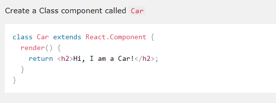
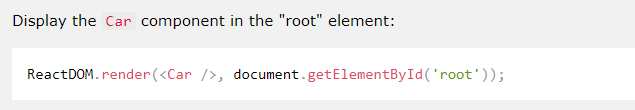
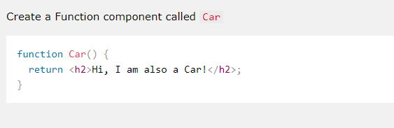
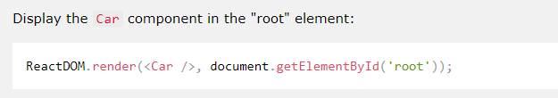
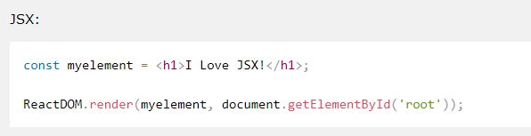
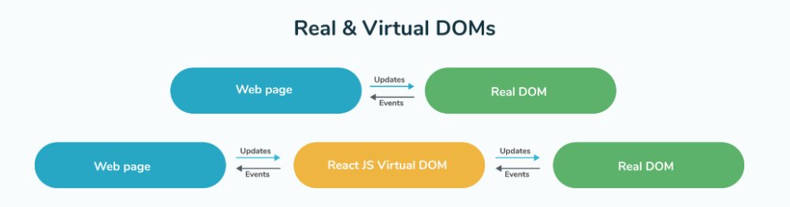

React is a Javascript library for building frontend web application or user interface. It is currently one of the most popular JavaScript front-end libraries which has a strong foundation and a large community supporting it.
React was created by Jordan Walke, a software engineer at Facebook.
React is a library, not a framework. It focuses on the view layer of the MVC (Model-View-Controller) framework, so it is a part of creating a framework. That said, many people find that it has some features that enable it to help build or support larger frameworks. This is especially true when factoring in the wider ecosystem.
Class component
 Function component
 The biggest advantage of using components is that you can change any component at any point in time without affecting the rest of the applications.
JSX(JavaScript Extension), is a React extension which allows writing JavaScript code that looks like HTML
The virtual DOM is a concept implemented by libraries in JavaScript on top of browser APIs.
How does it work?
Other examples include:
Thanks